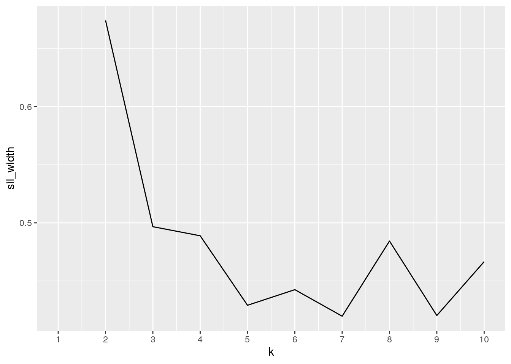

January 1, 0001
0.Introduction
I have chosen two datasets, one which contains scrobble (music listening) data from last.fm, and another that contains activity data from the Apple health app. The scrobble data includes artist, album, and song information for music listened to on a given date, which I downloaded for free from this website (https://benjaminbenben.com/lastfm-to-csv/). The health data contains distance traveled (in miles), steps taken, and flights of stairs climbed per day. I chose these two datasets because I thought it’d be interesting to look at trends between activity and my listening habits. One question that I felt confident in answering was whether I listen to higher energy music when I’m more active, and wanted to see if the data really supported my assumptions.
# Load the appropriate packages
library(readxl)
library(zoo)
library(urltools)
library(anytime)
library(jsonlite)
library(dplyr)
library(tidyverse)
library(cluster)api_key <- "934ebc5eb7fad868c21ea8c8046bc983" # Will need this later!
# Import lastfm scrobble data, apple health data
raw_scrobbles <- read_excel("~/Johnny/Jbiscuits_scrobbles.xlsx") %>%
mutate(date = as.Date(anytime(date))) %>% arrange(desc(date))
head(raw_scrobbles)## # A tibble: 6 x 4
## artist album song date
## <chr> <chr> <chr> <date>
## 1 Armand Hammer Haram God's Feet 2021-03-26
## 2 Armand Hammer Haram Aubergine 2021-03-26
## 3 Armand Hammer Haram Indian Summer 2021-03-26
## 4 Armand Hammer Haram Black Sunlight 2021-03-26
## 5 Armand Hammer Haram Roaches Don't Fly 2021-03-26
## 6 Armand Hammer Haram Sir Benni Miles 2021-03-26tidy_health <- read_excel("~/Johnny/Health Data.xlsx") %>% mutate(date = as.Date(anytime(date)))
head(tidy_health)## # A tibble: 6 x 4
## date distance flights_climbed steps
## <date> <dbl> <dbl> <dbl>
## 1 2021-03-26 0.670 2 1340
## 2 2021-03-25 4.51 7 7748
## 3 2021-03-24 3.16 7 7434
## 4 2021-03-23 5.76 9 10240
## 5 2021-03-22 5.27 5 9121
## 6 2021-03-21 4.81 4 77821.Tidying
While both data sets are technically tidy (one row per observation, one column per variable), raw_scrobbles is quite long and unwieldy. This is because each observation corresponds to a unique date-artist-album-song, which, as someone who listens to music mostly in album format, leads to a lot of date-artist-album repetition. An easy way to fix this is by using pivot_longer() to split the information from song into two columns and then collapse them into a list according to date-artist-album using pivot_wider().
long_scrobbles <- raw_scrobbles %>% pivot_longer(3, names_to = "category",
values_to = "title")
head(long_scrobbles)## # A tibble: 6 x 5
## artist album date category title
## <chr> <chr> <date> <chr> <chr>
## 1 Armand Hammer Haram 2021-03-26 song God's Feet
## 2 Armand Hammer Haram 2021-03-26 song Aubergine
## 3 Armand Hammer Haram 2021-03-26 song Indian Summer
## 4 Armand Hammer Haram 2021-03-26 song Black Sunlight
## 5 Armand Hammer Haram 2021-03-26 song Roaches Don't Fly
## 6 Armand Hammer Haram 2021-03-26 song Sir Benni Milestidy_scrobbles <- long_scrobbles %>% pivot_wider(names_from = "category",
values_from = "title")
str(tidy_scrobbles) # View of the new data structure with songs in nested lists## tibble [25,864 × 4] (S3: tbl_df/tbl/data.frame)
## $ artist: chr [1:25864] "Armand Hammer" "Freddie Gibbs" "YG" "BROCKHAMPTON" ...
## $ album : chr [1:25864] "Haram" "Alfredo" "Still Brazy (Deluxe)" "SATURATION" ...
## $ date : Date[1:25864], format: "2021-03-26" "2021-03-26" ...
## $ song :List of 25864
## ..$ : chr [1:6] "God's Feet" "Aubergine" "Indian Summer" "Black Sunlight" ...
## ..$ : chr "1985"
## ..$ : chr "Blacks & Browns"
## ..$ : chr [1:6] "FAKE" "2PAC" "BOYS" "STAR" ...
## ..$ : chr [1:2] "Same Size Shoe" "Hyacinth"
## ..$ : chr "Rich Don't Stop"
## ..$ : chr "John L"
## ..$ : chr "Holdin Me Down"
## ..$ : chr "BUZZCUT (FEAT. DANNY BROWN)"
## ..$ : chr [1:2] "Exposure" "Cooking With Grease"
## ..$ : chr [1:7] "Monochrome" "Sudden Thing" "Open My Eyes" "Peace Lily" ...
## ..$ : chr "c2.0"
## ..$ : chr "Another Day"
## ..$ : chr "NYC Observation"
## ..$ : chr "Whateva Will Be"
## ..$ : chr "All da Smoke"
## ..$ : chr "10 Freaky Girls (with 21 Savage)"
## ..$ : chr "I'm Holding Out For Something"
## ..$ : chr "The Body Is A Clear Place"
## ..$ : chr [1:12] "Gold Thread" "First And Fourth" "Marnie" "An Arabesque" ...
## ..$ : chr [1:18] "Allstar" "Da Screets" "Iz u Stupid" "weight of the word*" ...
## ..$ : chr [1:13] "Roots Of Blue" "Roots Of Blue" "Troubled Water" "Miles Away" ...
## ..$ : chr [1:9] "Forever Find Flight" "1" "GREEDY" "GREED" ...
## ..$ : chr "Sunrise in Beijing"
## ..$ : chr "Guinnevere"
## ..$ : chr "Building a Ladder"
## ..$ : chr [1:19] "Green, Green Grass of Home - Live at Folsom State Prison, Folsom, CA - January 1968" "Greystone Chapel - Live at Folsom State Prison, Folsom, CA - January 1968" "I Got Stripes - Live at Folsom State Prison, Folsom, CA (2nd Show) - January 1968" "Green, Green Grass of Home - Live at Folsom State Prison, Folsom, CA - January 1968" ...
## ..$ : chr "White America"
## ..$ : chr [1:2] "Tonya - Skit" "Dr. West - Skit"
## ..$ : chr "No Love"
## ..$ : chr "Shot out of A Cannon"
## ..$ : chr "Sun King - 2019 Mix"
## ..$ : chr [1:19] "Building a Ladder" "Molasses" "Only Time All the Time: Making Friends with Studio Owl" "The Lung" ...
## ..$ : chr "Big (feat. Gunna)"
## ..$ : chr [1:2] "Hurt" "Collapsed In Sunbeams"
## ..$ : chr [1:2] "TE MUDASTE" "EL MUNDO ES MÃ\u008dO"
## ..$ : chr [1:4] "MelodÃa Del RÃo" "Tres Lindas Cubanas" "Cumbanchero" "La Engañadora"
## ..$ : chr [1:10] "Freudian" "Transform (feat. Charlotte Day Wilson)" "Take Me Away (feat. Syd)" "Blessed" ...
## ..$ : chr [1:2] "All da Smoke" "All da Smoke"
## ..$ : chr "Twist My Fingaz"
## ..$ : chr "DI MI NOMBRE - Cap.8: Éxtasis"
## ..$ : chr "Corporation"
## ..$ : chr "the ends"
## ..$ : chr "Flaws and Sins"
## ..$ : chr "ringtone (Remix) [feat. Charli XCX, Rico Nasty, Kero Kero Bonito]"
## ..$ : chr [1:2] "Mr. To You" "Man to Man"
## ..$ : chr "Over and Over and Over"
## ..$ : chr "Sup Mate (feat. Future)"
## ..$ : chr [1:2] "On The Run (feat. Offset)" "Climax (feat. 6lack)"
## ..$ : chr "Jewel"
## ..$ : chr [1:12] "F.U.B.U. (feat. The-Dream & BJ the Chicago Kid)" "Interlude: For Us by Us" "Where Do We Go" "Interlude: This Moment" ...
## ..$ : chr [1:2] "Beach Life-in-Death" "My Boy - Twin Fantasy"
## ..$ : chr "Go2DaMoon (feat. Kanye West)"
## ..$ : chr [1:9] "Djinn" "Perplexity" "Meditation" "Delusion" ...
## ..$ : chr [1:4] "Spindrifting" "Al Emadi - Blacksea Não Maya Remix" "Jamil Jamal - DJ Khalab Remix" "The Lost Pearl - Hector Plimmer Remix"
## ..$ : chr [1:10] "Introductions" "Diaspora" "West of the West" "Incarnation (Chief Adjuah - Idi of the Xodokan)" ...
## ..$ : chr "Yèkèrmo sèw"
## ..$ : chr "Don't Call Me (feat. Shakka)"
## ..$ : chr "Had Enough (feat. Quavo & Offset)"
## ..$ : chr "Hahaha"
## ..$ : chr "Sup Mate (feat. Future)"
## ..$ : chr "Swizz Beatz"
## ..$ : chr "Coming Home"
## ..$ : chr "Magical Mystery Tour - Remastered 2009"
## ..$ : chr [1:2] "For Ya" "Mi Palomita (Intro)"
## ..$ : chr [1:23] "foresight" "metal" "pharmacy" "clown nose" ...
## ..$ : chr "Nonbinary"
## ..$ : chr "Blue Jay Way - Remastered 2009"
## ..$ : chr "JU$T (feat. Pharrell Williams & Zack de la Rocha)"
## ..$ : chr [1:2] "Flying - Remastered 2009" "Magical Mystery Tour - Remastered 2009"
## ..$ : chr "Taxman - Remastered 2009"
## ..$ : chr [1:5] "Disrespectful" "Mad Stalkers" "My Choppa Hate Niggas" "Rap Saved Me" ...
## ..$ : chr [1:2] "Nightmare" "Ric Flair Drip (& Metro Boomin)"
## ..$ : chr "Exchange"
## ..$ : chr "Can't Go"
## ..$ : chr [1:3] "Glock In My Lap" "Runnin" "INTRO"
## ..$ : chr "Cranes in the Sky"
## ..$ : chr "Temptation"
## ..$ : chr "Reborn"
## ..$ : chr "Are You... Can You... Were You? (Felt)"
## ..$ : chr "Kickback"
## ..$ : chr "R.I.P. SCREW"
## ..$ : chr "Great Dane"
## ..$ : chr [1:2] "Thangs" "Looks"
## ..$ : chr "Hold Me Down"
## ..$ : chr "Shotgun"
## ..$ : chr "Ungodly Hour"
## ..$ : chr "Ageispolis"
## ..$ : chr "Untrust Us"
## ..$ : chr "langsette"
## ..$ : chr "Galaxy in Janaki"
## ..$ : chr [1:2] "Focus" "DOEP"
## ..$ : chr "Parallel Jalebi"
## ..$ : chr "Amu"
## ..$ : chr "Cityfade"
## ..$ : chr "Let's Shoot Up"
## ..$ : chr "Marijuana"
## ..$ : chr "Luminous Beings"
## ..$ : chr "Bug Thief"
## .. [list output truncated]Since tidy_scrobbles only contained a few variables, I thought I’d make the dataset more interesting by adding in artist genre tags, that way we can do some more interesting analysis with the health data. To add in artist genre tags, I used publicly available functions that take advantage of the last.fm API to extract user-submitted metadata. Using this method, I populated a data frame with the top 3 most popular genre tags per artist.
# Functions to build and fetch artist tags using script from
# Jay Blanco: https://tinyurl.com/5swb3bap
fetch_artist_toptags <- function(artist) {
# print(paste0('Fetching ', artist))
api_key <- "934ebc5eb7fad868c21ea8c8046bc983"
json <- fromJSON(build_artist_toptags_query(artist, api_key))
if (length(json$toptags$tag) == 0)
return(NA)
return(as.vector(json$toptags$tag[, "name"]))
}
build_artist_toptags_query <- function(artist, api_key, base = "http://ws.audioscrobbler.com/2.0/") {
base <- param_set(base, "method", "artist.gettoptags")
base <- param_set(base, "artist", URLencode(artist))
base <- param_set(base, "api_key", api_key)
base <- param_set(base, "format", "json")
return(base)
}
# Generate vector of artist genre tags. Each object in the
# vector is a list that contains top tags for every unique
# artist I've scrobbled
artist_vec <- tidy_scrobbles %>% pull(artist) %>% as.vector() %>%
unique()
tag_vec <- c()
for (artist in artist_vec) {
tag_vec <- append(tag_vec, list(fetch_artist_toptags(artist)))
}
# Extract top 3 genre tags for each artist
top3_tags <- matrix(nrow = 0, ncol = 3)
for (tag_list in tag_vec) {
top3_tags <- rbind(top3_tags, (tag_list[1:3]))
}
top3_tags <- cbind(top3_tags, artist_vec) %>% as.data.frame() %>%
rename(tag1 = V1, tag2 = V2, tag3 = V3, artist = artist_vec)
head(top3_tags)## tag1 tag2 tag3 artist
## 1 Hip-Hop rap underground hip-hop Armand Hammer
## 2 Hip-Hop Gangsta Rap rap Freddie Gibbs
## 3 Hip-Hop rap west coast YG
## 4 Hip-Hop rap hip hop BROCKHAMPTON
## 5 gospel soul experimental serpentwithfeet
## 6 hip hop rap chicago Saba2.Joining
I then joined tidy_scrobbles (with genre tags) and tidy_health by date.
# Join scrobble and genre tag data with health data
total <- full_join(tidy_scrobbles, top3_tags, by = "artist") %>%
left_join(tidy_health, by = "date") %>% arrange(desc(date),
artist, album, song)
head(total)## # A tibble: 6 x 10
## artist album date song tag1 tag2 tag3 distance flights_climbed steps
## <chr> <chr> <date> <lis> <fct> <fct> <fct> <dbl> <dbl> <dbl>
## 1 Arman… Haram 2021-03-26 <chr… Hip-… rap unde… 0.670 2 1340
## 2 black… John… 2021-03-26 <chr… math… nois… expe… 0.670 2 1340
## 3 BROCK… BUZZ… 2021-03-26 <chr… Hip-… rap hip … 0.670 2 1340
## 4 BROCK… SATU… 2021-03-26 <chr… Hip-… rap hip … 0.670 2 1340
## 5 Fredd… Alfr… 2021-03-26 <chr… Hip-… Gang… rap 0.670 2 1340
## 6 King … Hold… 2021-03-26 <chr… Hip-… rap trap 0.670 2 1340dim(tidy_scrobbles)[1]## [1] 25864dim(tidy_health)[1]## [1] 1931dim(total)[1]## [1] 25864Since I began using last.fm on July 1, 2018, I have listened to 25,864 unique date-artist-albums. Since I started tracking my physical activity via iPhone on December 13, 2015, 1931 days of information have been collected. Given the number of repeating dates in tidy_scrobbles, much of the activity data from tidy_health is repeated in the joined dataset.
Here, I chose a left join to avoid rows filled with NA for artist, album, song and tag information, since there were some dates in tidy_health where no scrobble data was collected (days where I didn’t listen to any music).
3.Wrangling
Now, lets see what things we can pull out of this big dataset:
# Data filtering
total %>% filter(date == "2021-03-26") %>% select(date, artist,
album) # View artists/albums listened to on a given date## # A tibble: 11 x 3
## date artist album
## <date> <chr> <chr>
## 1 2021-03-26 Armand Hammer Haram
## 2 2021-03-26 black midi John L / Despair
## 3 2021-03-26 BROCKHAMPTON BUZZCUT (FEAT. DANNY BROWN)
## 4 2021-03-26 BROCKHAMPTON SATURATION
## 5 2021-03-26 Freddie Gibbs Alfredo
## 6 2021-03-26 King Combs Holdin Me Down
## 7 2021-03-26 LA Priest GENE
## 8 2021-03-26 Saba Ziplock / Rich Don't Stop
## 9 2021-03-26 serpentwithfeet DEACON
## 10 2021-03-26 Shelley FKA DRAM Cooking With Grease
## 11 2021-03-26 YG Still Brazy (Deluxe)total %>% filter(date == "2021-03-26" & artist == "Armand Hammer") %>%
pull(song) %>% as_vector() %>% tibble(`2021-03-26` = .) # View songs listened to by a particular artist on a given day## # A tibble: 6 x 1
## `2021-03-26`
## <chr>
## 1 God's Feet
## 2 Aubergine
## 3 Indian Summer
## 4 Black Sunlight
## 5 Roaches Don't Fly
## 6 Sir Benni Milestotal %>% filter(artist == "Miles Davis" & album == "Bitches Brew") %>%
select(`Miles Davis: Bitches Brew` = date) # Find dates when you listened to a particular artist/album## # A tibble: 27 x 1
## `Miles Davis: Bitches Brew`
## <date>
## 1 2021-03-01
## 2 2021-02-28
## 3 2020-12-31
## 4 2020-09-19
## 5 2020-09-18
## 6 2020-08-18
## 7 2020-07-04
## 8 2020-06-14
## 9 2020-06-10
## 10 2020-05-28
## # … with 17 more rows# Find dates a particular song was listened to (can be easily
# extended to search for song artists, albums)
count <- 0
date_vec <- c()
song_name <- "Spanish Key"
for (unique_ID_songs in total$song) {
count <- count + 1
if (song_name %in% unique_ID_songs) {
date_vec <- append(date_vec, total$date[count])
}
}
tibble(`:=`({
{
song_name
}
}, date_vec))## # A tibble: 5 x 1
## `Spanish Key`
## <date>
## 1 2020-06-14
## 2 2020-04-26
## 3 2020-04-06
## 4 2019-12-24
## 5 2019-07-13# Frequency of genres listened to, according to most popular
# artist tag (tag1)
tag_freq <- total %>% group_by(tag1) %>% summarize(freq = n()) %>%
arrange(desc(freq))
tag_freq## # A tibble: 132 x 2
## tag1 freq
## <fct> <int>
## 1 Hip-Hop 8220
## 2 NA 7462
## 3 trap 1038
## 4 jazz 832
## 5 classic rock 820
## 6 pop 636
## 7 Lo-Fi 618
## 8 rnb 573
## 9 indie 532
## 10 folk 531
## # … with 122 more rows# Frequency of top 3 genre tag combos
total %>% group_by(tag1, tag2, tag3) %>% summarize(freq = n()) %>%
arrange(desc(freq))## # A tibble: 634 x 4
## # Groups: tag1, tag2 [422]
## tag1 tag2 tag3 freq
## <fct> <fct> <fct> <int>
## 1 NA NA NA 7462
## 2 Hip-Hop rap trap 2103
## 3 Hip-Hop rap hip hop 1892
## 4 Hip-Hop trap rap 1864
## 5 trap Hip-Hop rap 901
## 6 classic rock rock british 651
## 7 Hip-Hop rap seen live 500
## 8 Hip-Hop rap rnb 313
## 9 Hip-Hop experimental experimental rap 293
## 10 Hip-Hop experimental glitch hop 291
## # … with 624 more rows# Albums listened to between the start of quarantine and
# graduation (R.I.P.)
total %>% filter(date >= as.Date("2020-03-12") & date <= as.Date("2020-05-16")) %>%
group_by(album) %>% summarize(freq = n()) %>% arrange(desc(freq))## # A tibble: 900 x 2
## album freq
## <chr> <int>
## 1 Friend or Foux 14
## 2 Eternal Atake (Deluxe) - LUV vs. The World 2 11
## 3 So Much Fun 11
## 4 Jeffery 10
## 5 SAWAYAMA 9
## 6 IGOR 8
## 7 All My Heroes Are Cornballs 7
## 8 Bitches Brew 7
## 9 Covered In Money! 7
## 10 Today and Tomorrow 7
## # … with 890 more rows# Days when Hip-Hop and Jazz were my most listened to genres
top_hh_dates <- total %>% group_by(date, tag1) %>% summarize(freq = n()) %>%
arrange(desc(freq)) %>% filter(tag1 == "Hip-Hop") %>% select(date)
top_jazz_dates <- total %>% group_by(date, tag1) %>% summarize(freq = n()) %>%
arrange(desc(freq)) %>% filter(tag1 == "jazz") %>% select(date)
# Using the top five days of Hip-Hop/Jazz listening, compute
# average steps taken, distance traveled, flights of stairs
# climbed
hh_activity <- total %>% filter(date == as_vector(top_hh_dates[1:5,
1])) %>% summarize(mean_steps = mean(steps), mean_distance = mean(distance),
mean_flights = mean(flights_climbed))
jazz_activity <- total %>% filter(date == as_vector(top_jazz_dates[1:5,
1])) %>% summarize(mean_steps = mean(steps), mean_distance = mean(distance),
mean_flights = mean(flights_climbed))
# I am more active on days that I mostly listen to Hip-Hop
# versus Jazz
full_join(hh_activity, jazz_activity) %>% cbind(genre = c("Hip-Hop",
"Jazz"))## mean_steps mean_distance mean_flights genre
## 1 5947.236 2.416442 6.666667 Hip-Hop
## 2 5475.045 2.258689 7.522727 Jazz# Overall activity summary (must use group_by to avoid
# redundancy that skews the analysis)
total %>% group_by(date) %>% summarize(distance = mean(distance),
steps = mean(steps), flights_climbed = mean(flights_climbed)) %>%
summarize(max_distance = max(distance), min_distance = min(distance),
mean_distance = mean(distance), sd_distance = sd(distance),
max_steps = max(steps), min_steps = min(steps), mean_steps = mean(steps),
sd_steps = sd(steps), mean_flights_climbed = mean(flights_climbed),
sd_flights_climbed = sd(flights_climbed))## # A tibble: 1 x 10
## max_distance min_distance mean_distance sd_distance max_steps min_steps
## <dbl> <dbl> <dbl> <dbl> <dbl> <dbl>
## 1 11.9 0.371 3.32 1.64 27134. 913
## # … with 4 more variables: mean_steps <dbl>, sd_steps <dbl>,
## # mean_flights_climbed <dbl>, sd_flights_climbed <dbl># Activity summary by genre
total %>% group_by(tag1) %>% summarize(distance = mean(distance),
steps = mean(steps), flights_climbed = mean(flights_climbed))## # A tibble: 132 x 4
## tag1 distance steps flights_climbed
## <fct> <dbl> <dbl> <dbl>
## 1 60s 2.95 7145. 12.9
## 2 80s 3.33 7703. 11.7
## 3 acoustic 2.25 5344 10
## 4 afrobeat 5.68 13245. 15.2
## 5 All 2.06 4623. 10
## 6 alternative 2.73 6446. 9.37
## 7 alternative rock 2.43 5693 6
## 8 ambient 3.09 7293. 10.2
## 9 american 3.65 8590. 13.6
## 10 art pop 2.05 4731. 8.38
## # … with 122 more rows# Create unique_ID variable (using unite instead of mutate)
total <- total %>% unite(unique_ID, date, artist, album, remove = F)
head(total)## # A tibble: 6 x 11
## unique_ID artist album date song tag1 tag2 tag3 distance
## <chr> <chr> <chr> <date> <list> <fct> <fct> <fct> <dbl>
## 1 2021-03-26_Arm… Armand… Haram 2021-03-26 <chr … Hip-… rap under… 0.670
## 2 2021-03-26_bla… black … John L … 2021-03-26 <chr … math… nois… exper… 0.670
## 3 2021-03-26_BRO… BROCKH… BUZZCUT… 2021-03-26 <chr … Hip-… rap hip h… 0.670
## 4 2021-03-26_BRO… BROCKH… SATURAT… 2021-03-26 <chr … Hip-… rap hip h… 0.670
## 5 2021-03-26_Fre… Freddi… Alfredo 2021-03-26 <chr … Hip-… Gang… rap 0.670
## 6 2021-03-26_Kin… King C… Holdin … 2021-03-26 <chr … Hip-… rap trap 0.670
## # … with 2 more variables: flights_climbed <dbl>, steps <dbl>Overall, its clear that hip-hop is one of my most listened to genres, and that I am generally more active on days that I listen to a lot of hip-hop. This makes sense, since most songs on my exercise playlist are hip-hop/rap and tend to have a higher bpm. I also noticed a pretty large variance in the number of steps I take per day. With a standard deviation of 3791 steps, I think a lot of this variance came about with the start of quarantine and me walking around a lot less.
4.Visualization
# Correlation matrix heatmap
cormat <- total %>% select("distance":"steps") %>% cor()
tidycor <- cormat %>% as.data.frame %>% rownames_to_column("var1") %>%
pivot_longer(-1, names_to = "var2", values_to = "correlation")
tidycor %>% ggplot(aes(var1, var2, fill = correlation)) + geom_tile() +
scale_fill_gradient2(low = "red", mid = "white", high = "blue") +
geom_text(aes(label = round(correlation, 2)), color = "black",
size = 4) + theme(axis.text.x = element_text(angle = 90,
hjust = 1)) + coord_fixed()# Scatter plot
total %>% ggplot(aes(steps, distance)) + geom_point(aes(color = flights_climbed)) +
scale_color_gradient(low = "blue", high = "red") + geom_smooth(method = "lm") +
scale_x_continuous(breaks = seq(0, 30000, 2500)) + ggtitle("distance vs. steps (shaded by flights climbed)")
total %>% ggplot(aes(steps, flights_climbed)) + geom_point(aes(color = distance)) +
scale_color_gradient(low = "blue", high = "red") + geom_smooth(method = "lm") +
scale_x_continuous(breaks = seq(0, 30000, 2500)) + ggtitle("flights climbed vs. steps (shaded by distance)")
# Density plot
total[1:365, ] %>% ggplot(aes(steps, fill = tag1)) + geom_density(aes(group = tag1),
alpha = 0.85) + geom_rug(aes(color = tag1)) + scale_x_continuous(breaks = seq(0,
30000, 2500)) + theme(legend.position = "none") + ggtitle("step density by genre")# Bar plot
total[1:250, ] %>% ggplot(aes(x = reorder(tag1, distance), y = distance)) +
geom_bar(stat = "summary") + geom_errorbar(stat = "summary") +
geom_jitter(aes(color = steps), alpha = 0.5) + scale_color_gradient(low = "blue",
high = "red") + scale_y_continuous(breaks = seq(0, 7, 0.5)) +
theme(axis.text.x = element_text("genre", angle = 90)) +
xlab("genre") + ggtitle("distance traveled by genre")In the first scatter plot, we see a clear linear relationship between steps walked and total distance traveled per day, as one would expect. Flights climbed appears to be only weakly correlated with steps and/or distance. This is confirmed in the following scatter plot, which clearly shows a weaker positive relationship between steps and flights climbed.
More interesting to look at is the bar plot, which looks at distance and steps traveled by genre (using only the 250 most recent entries, however, for visibility and neatness). Here, we are able to see which genres have been associated with greater walking distance/step counts recently. Interestingly, indie pop, punk, and singer-songwriter have the highest mean distance traveled. Soul, Hip-hop, and Jazz have the most data points, and are middle-of-the-pack, but soul has the greatest variance while jazz has pretty low variance.
The density plot is mostly for fun, but it shows how certain genres are more tightly associated with a particular level of activity, while others have little correlation with activity as measured by step count.
#5. Dimensionality Reduction
pam_dat <- total[1:5000, ] %>% select("distance":"flights_climbed") %>%
na.omit() # Chose a subset of the data since the whole dataset is so large and slow to put through the for-loop
sil_width <- vector()
for (i in 2:10) {
kms <- kmeans(pam_dat, centers = i)
sil <- silhouette(kms$cluster, dist(pam_dat))
sil_width[i] <- mean(sil[, 3])
}
ggplot() + geom_line(aes(x = 1:10, y = sil_width)) + scale_x_continuous(name = "k",
breaks = 1:10) #k=2 has highest sil_width
pam1 <- pam_dat %>% pam(k = 2)
library(GGally)
total[1:5000, ] %>% mutate(cluster = as.factor(pam1$clustering)) %>%
ggpairs(columns = c("distance", "steps", "flights_climbed"),
aes(color = cluster))# Plot principal components
plot(pam1, which = 1)PAM clustering analysis has shown that the first two principal components explain the vast majority (~100%) of the variance between the variables. The main source of this variance comes from flights_climbed, which tends to cluster separately from distance and steps, which themselves are tightly associated with one another. The different clusters, then, represent observations with similar distance and step counts, but are distant in terms of flights climbed.